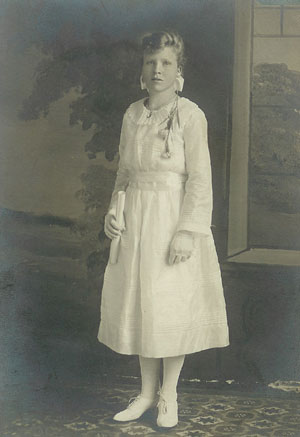

|

|
Selma Anderson was born to Anne and Nels Anderson on September 12th, 1904 in New Hope, WI. She married Harold Neubauer on March 24, 1926, and together they had three children: Marvin, Eileen, and Bonita. Selma lost Harold in June of 1966. She died herself on the 30th of September, 2004, in Neenah, WI. |